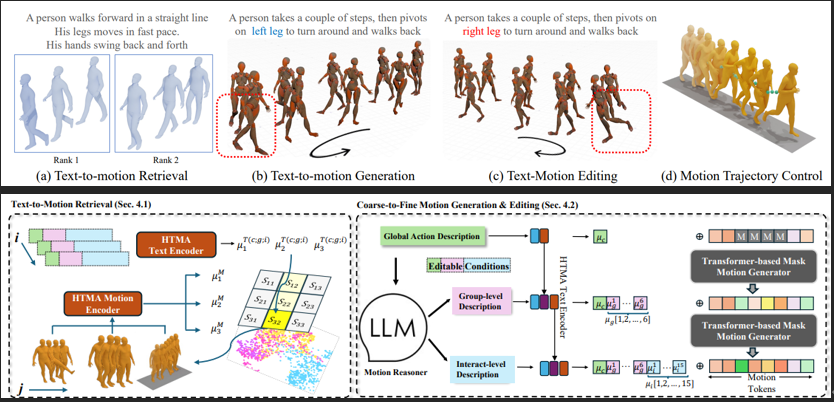
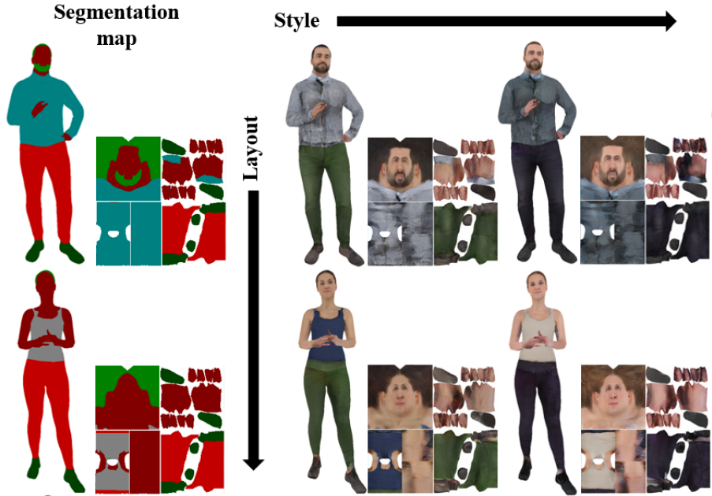
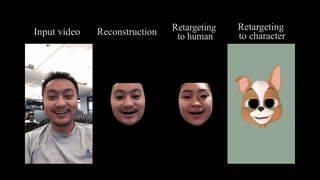
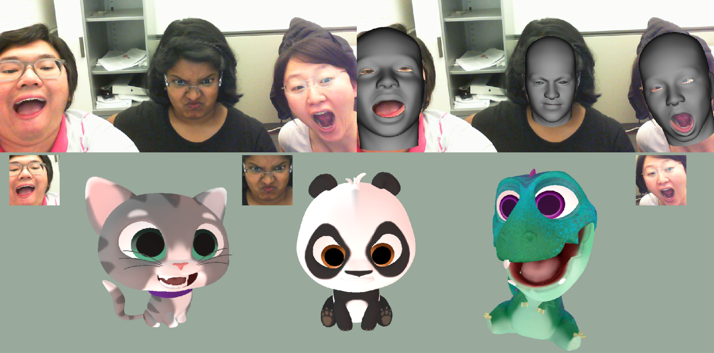
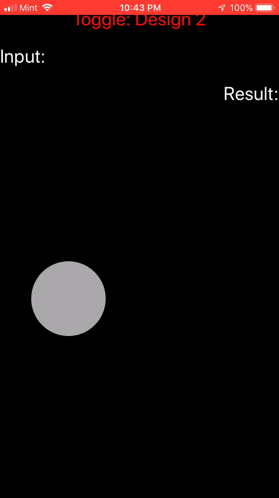
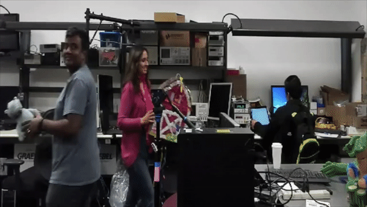
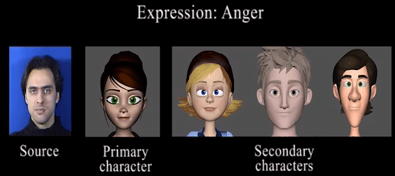
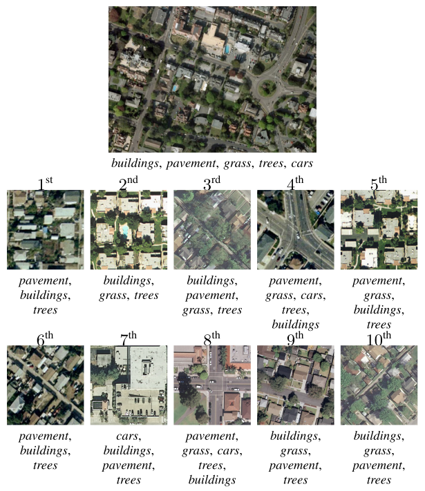
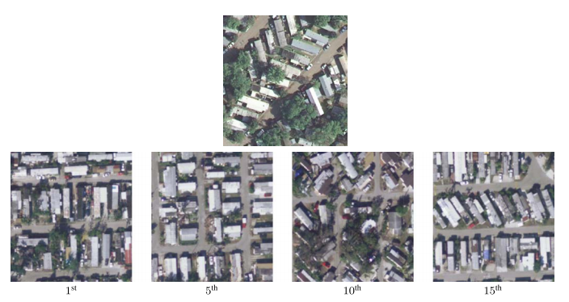

KinMo: Kinematic-aware Human Motion Understanding and Generation
IEEE International Conference on Computer Vision (ICCV), 2025

TalkinNeRF: Animatable Neural Fields for Full-Body Talking Humans
ABAW at IEEE European Conference on Computer Vision (ECCVW), 2024

Semi-supervised Synthesis of High-Resolution Editable Textures for 3D Humans
IEEE Conference on Computer Vision and Pattern Recognition (CVPR), 2021

Personalized Face Modeling for Improved Face Reconstruction and Motion Retargeting
IEEE European Conference on Computer Vision (ECCV), 2020 Spotlight!

Joint Face Detection and Facial Motion Retargeting for Multiple Faces
IEEE Conference on Computer Vision and Pattern Recognition (CVPR), 2019

GestureCalc: An Eyes-Free Calculator for Touch Screens
ACM SIGACCESS Conference on Computers & Accessibility (ASSETS), 2019

View Interpolation of Multi-Camera Array Images with Flow Estimation and Image Super Resolution using Deep Learning
US Patent 10,547,823, 2019

Learning to Generate 3D Stylized Character Expressions from Humans
IEEE Winter Conference on Applications of Computer Vision (WACV), 2018
People's Choice Award! [Allen School News] [Geekwire article]

